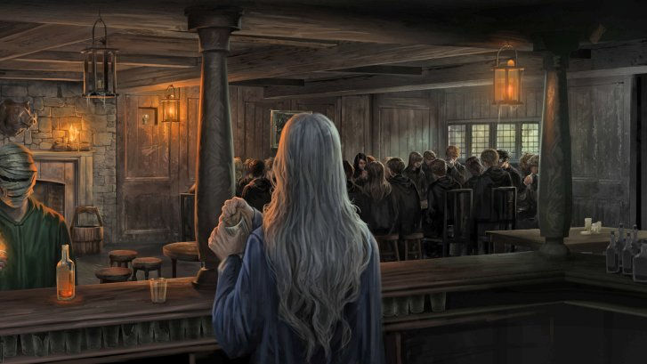
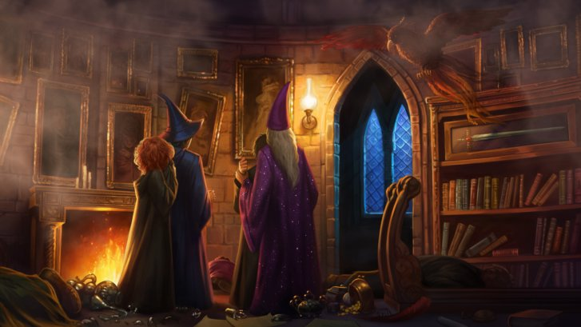

6 characters who probably shouldn’t have been in Dumbledore’s Army
Dumbledore’s Army. The legends, the rebels, the… worried O.W.L. students?

Dumbledore’s Army was made for one purpose and one purpose only: to learn proper Defence Against the Dark Arts in preparation for Lord Voldemort’s full return to power. Oh, and to stick it to Professor Umbridge. But mostly the ‘terrifying return of the Dark Lord’ thing.
Although many members of the gang joined up to learn everything they could from Harry to fight old Voldy and his Death Eaters, others decided to join for… less than noble reasons. Here are the members of Dumbledore’s Army who probably should have thought twice before writing their name on a cursed sign-up sheet…
Zacharias Smith
No wonder Fred and George threatened this grouchy Hufflepuff with some of Zonko’s finer merchandise. Ever since arriving at the Hog’s Head for the group’s very first meeting, Zacharias only ever seemed to question Harry, and made it pretty obvious that he just wanted to know all the juicy gossip about Voldemort’s return.
What made his constant scepticism even more irksome was that no one actually ever invited him along. Hermione admitted that she had to give him the details of the first meeting after he overheard her telling Ernie Macmillan and Hannah Abbott about it. So his presence is basically the classic awkwardness of when someone invites themselves along to something and you’re too polite to say no to them…
Michael Corner (and his little squad)
Michael Corner seemed like a decent enough fellow, but it can’t be denied that he and his buddies, Terry Boot and Anthony Goldstein, joined the D.A. because Michael was dating Ginny at the time. We could probably think of several more romantic settings to spend time with your girlfriend than in a club with three of her older brothers while learning spells to fight off the wizarding world’s greatest evil – but hey, whatever works for you, Mikey!
Marietta Edgecombe
Oh, Marietta. With her mum working at the Ministry, surely she’d know more than anyone not to sign up for something like this?

Cho’s curly-haired friend, who ended up with a pretty pattern of pimples across her face after betraying the gang, should never have been a member of the D.A. in the first place. She only really joined on Cho’s insistence, and seemed the spend most of her time there glaring at Harry. And then she finally betrayed the group by reporting them to Professor Umbridge (and effectively ended Harry’s relationship with Cho, so double points to Ravenclaw there).
Dumbledore escapes from Professor Umbridge and Cornelius Fudge.
Angelina Johnson
As Ernie Macmillan pointed out, the D.A. was seriously important. Even more important than O.W.L. examinations, people! However, despite needing to learn as much as they could about the impending mortal peril coming their way, Angelina was the first one to worry about Quidditch practice.
Angelina, we all love Quidditch, but putting your school team ahead of such an important group that could save your life seems ever-so-slightly short-sighted.
Retourner à l'acceuil